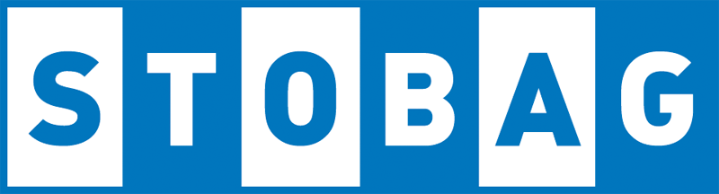
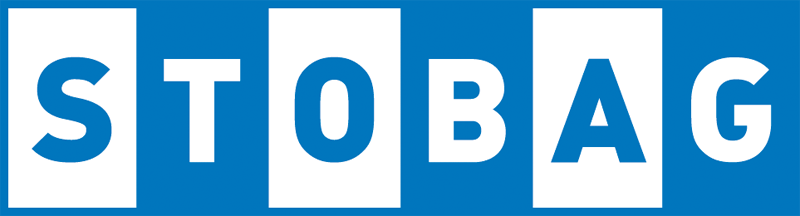

Kontakta oss för ett kostnadsfritt hembesök eller rådgivning.
Leverantörer vi jobbar med
 

Behöver du markiser till huset, arbetet eller annan solexponerad byggnad?
Med över 15 års branscherfarenhet har vi genom åren specialiserat oss inom screens, terrassmarkiser, fristående pergolamarkiser med motoriserade tak, uterum med inglasningar och alla olika typer av infästningar. Vi förser er med god kvalitet på våra produkter och fördelaktiga priser.
Vi arbetar mot privatpersoner, företag och kommuner.Kontakta oss om du vill ha service på din gamla markis eller varför inte en helt ny?
Vi har ett stort sortiment utav markiser, insynsskydd, solskydd och vindskydd! Med Karlstad som utgångspunkt sträcker vi oss runtom i Värmland. Vi tar även emot förfrågningar från andra orter.